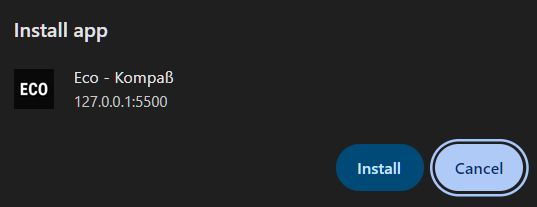

Bedienungsanleitung für den Eco - Kompaß
Prüfe Nachrichten auf autoritäre Tendenzen. Inspiriert von Umberto Ecos 14 Merkmalen plus Medieneinfluss (15). Offline, anonym.
Schritte:
Wähle eine Nachricht aus seriösen, z.B Amnesty, UN oder Katapult. Ordne sie einem oder mehreren der 15 Merkmale thematisch zu.
Prüfe pro Merkmal:
F (Freiheit)
bedroht? Ja oder nein?V (Vernunft)
bedroht? Ja oder nein?G (Gleichheit)
bedroht? Ja oder nein?B
"Bedeutung" Skala 1 – 10, subjektives Empfinden.P
"Präsenz" Einzelfall (0), Geduldet (0.5), Systemisch (1).Berechne:
F
× 50 +V
× 30 +G
× 20) ×B
×P
pro Merkmal.Ergebnis:
wird farblich abgestuft (dunkelgrün bis dunkelrot) dargestellt.
Intention:
U. Eco entlarvte Manipulation. Der Kompaß fördert klares Denken, basierend auf Aufklärungswerten: Freiheit, Vernunft, Gleichheit (1789). Freiheit wiegt schwer, da sie alles ermöglicht.
Offline verwendung
Erst müssen sie je nach Browser und Gerät auf den Installationsbutton drücken. Üblicherweise befindet sich dieser Button auf Laptops und PCs oben rechts im URL-Input.
Chrome (PC, Laptop)

Microsoft Edge (PC, Laptop)

Bei Handys müsst ihr erst auf den Knopf mit den drei Punkten klicken, dann wird euch ein Menü geöffnet, wo ihr diese Auswahlmöglichkeit finden könnt.
Chrome (Mobile)
Dann müsst ihr auf installieren drücken.
Chrome (PC, Laptop)
Microsoft Edge (PC, Laptop)

Chrome (Mobile)

Bei Microsoft Edge könnt ihr noch ein paar zusätzliche Einrichtungen machen, bei allen anderen wird das Programm auf euer Gerät installiert.